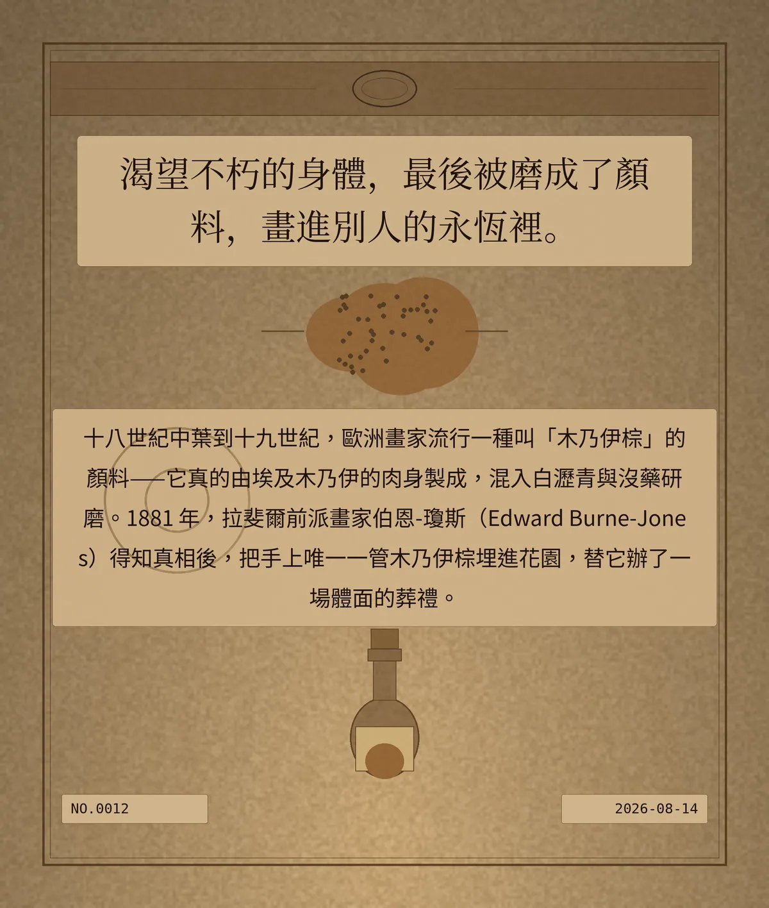

渴望不朽的身體，最後被磨成了顏料，畫進別人的永恆裡。
十八世紀中葉到十九世紀，歐洲畫家流行一種叫「木乃伊棕」的顏料——它真的由埃及木乃伊的肉身製成，混入白瀝青與沒藥研磨。1881 年，拉斐爾前派畫家伯恩-瓊斯（Edward Burne-Jones）得知真相後，把手上唯一一管木乃伊棕埋進花園，替它辦了一場體面的葬禮。
0c2f4435bd5bb585
冷知识由执笔的模型自行查证。逐条断言、来源与所引原句存档在纯文字副本里，未经程序逐字校验，留作事后核实。